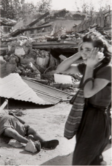
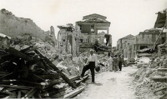
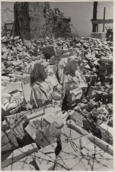
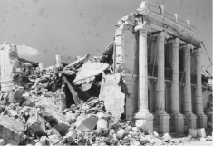

[2] Ένα δημόσιο κτίριο στην Κεφαλονιά μετά το σεισμό του1953. A public building in Kefalonia after the 1953 earthquake.
Μια τριάδα σεισμών έπληξε το νησί κατά τη διάρκεια λίγων ημερών τον Αύγουστο του 1953. Η καταστροφή των σεισμών ήταν σημαντική, αφήνοντας σπίτια κατεστραμμένα και εκτοπίζοντας χιλιάδες. Η σοβαρή αναστάτωση που προκάλεσαν αυτές οι καταστροφές ανάγκασε σημαντικές αλλαγές στους τρόπους ζωής, μέχρι τον τρόπο παρασκευής του ψωμιού. Το νησί αναγκάστηκε να ανοικοδομήσει σχεδόν τα πάντα, και στην ανοικοδόμηση, να επικεντρωθεί επίσης στον μετριασμό του κινδύνου μελλοντικών σεισμών.
Σεισμός
Earthquake
1953
Ιστορία
Timeline
A triad of earthquakes impacted the island over the period of a few days in August of 1953. The destruction of the earthquakes was significant, leaving homes destroyed and displacing thousands. The severe disruption that these disasters caused forced major changes to ways of life, all the way down to how bread was made. The island was forced to rebuild almost everything, and in the rebuilding, to also focus on mitigating the risk of future earthquakes.




[3] Ερείπια στο Αργοστόλι μετά το σεισμό. Ruins in Argostoli following the earthquake.
[4] Ερείπια μιας εκκλησίας μετά τον σεισμό. Ruins of a church after the earthquake.
[1] Οι δρόμοι της Κεφαλλονίτικης πρωτεύουσας, του Αργοστολίου, μετά το σεισμό. The streets of the Kephalonian capital, Argostoli, after the earthquake.
[1] https://gerryco23.wordpress.com/2015/05/24/the-ruins-of-kefalonia [2] https://commons.wikimedia.org/wiki/File:Kefaloniapubuildingdestroyed.jpg#filehistory [3] Photographer: David “Chim” Seymour [4] Photographer: David “Chim” Seymour